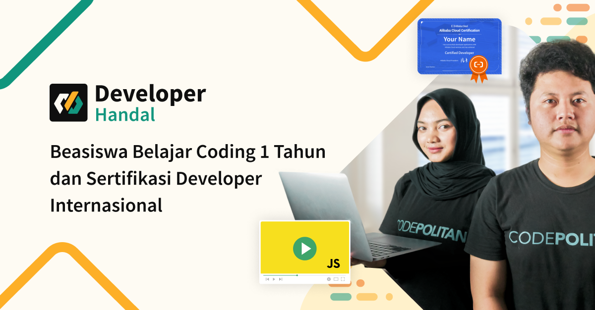
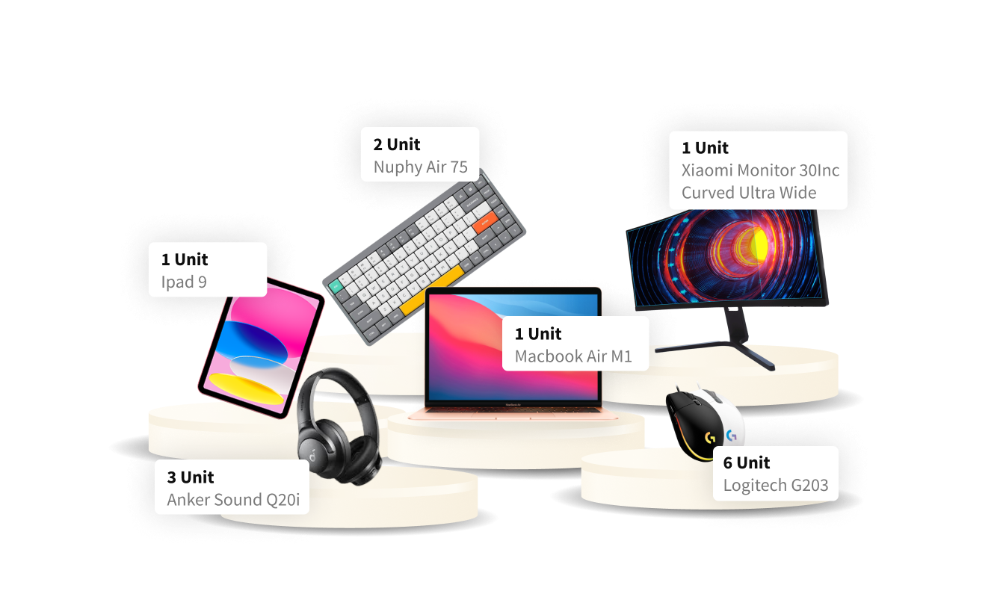

source :
devhandal.id
Apa itu Developer Handal ?
Dikutip dari devhandal.id Program DeveloperHandal
adalah program beasiswa belajar coding gratis selama 1 tahun
yang membekali kamu dengan keterampilan Full Stack
JavaScript dan sertifikasi developer internasional dari
Alibaba Cloud. DeveloperHandal menawarkan pendidikan online
yang berkualitas dan akses ke sertifikasi developer
internasional. Kamu bukan hanya mempelajari coding, tapi
juga mengasah keterampilan untuk menjadi JavaScript
Developer Expert yang handal dan siap memasuki dunia kerja.
Jika kamu memiliki semangat untuk belajar dan
bertransformasi, DeveloperHandal adalah langkah pertama yang
sempurna untuk membangun karir suksesmu di era digital ini.
Sedikit fakta tentang Alibaba Cloud adalah perusahaan
komputasi awan yang didirikan pada tahun 2009 oleh Alibaba
Group. Alibaba Cloud menyediakan berbagai layanan komputasi
awan, termasuk komputasi elastis, penyimpanan data,
jaringan, database, analitik, pembelajaran mesin, dan
keamanan. Dan merupakan perusahaan komputasi awan terbsesar ketiga setelah Amazon Web Service(AWS) dan Microsoft Azure
Apa Saja Benefit Jika kita Join Program Ini ?
Ada beberapa benefit yang akan kamu dapat, diantaranya yaitu,
- Sertifikat Internasional
- Program Belajar Javascript Gratis dari CodePolitan
- Webinar
- Mentor Profesional
- Proyek Praktik
- Komunitas Belajar
- Materi Pelajaran yang Update
Pengalaman saya mengikuti Program DevHandal
Saya adalah seorang mahasiswa S1 jurusan Teknik Informatika di Universitas Negeri Surabaya. Saya mengetahui program ini dari teman saya yang juga mengikuti program ini.
Kemudian saya mencoba untuk mencari tahu lebih detail mengenai program ini. Saya mendaftar beasiswa ini karena saya rasa program ini sangat menguntungkan bagi saya.
Dari awal belajar pemrograman saya selalu memanfaatkan sumber dan juga kursus-kursus gratis yang tersedia di internet secara gratis. Lagi pula program ini juga kebetulan muncul ketika saya sedang mencoba untuk memperdalam Web Development.
Setelah mendaftar dan melengkapi data diri, kalian akan diarahkan untuk mengambil sertifikasi gratis dari Alibaba Cloud. Pengambilan sertifikasi ini tidak memerluka biaya apapun, kalian hanya akan diminta untuk menyelesaikan misi yang berisi tutorial.
Kemudian setelah mendapat sertifikat dari Alibaba Cloud kalian akan diarahkan untuk melalukan share twibbon.
Disini ada beberapa misi dari Developer Handal yang harus kalian selesaikan untuk mendapat Program Beasiswa Belajar Javascript selama 1 Tahun, diantaranya yaitu :
- Lengkapi data diri (+100 poin)
- Buat akun Alibab Cloud (+100 poin)
- Tuntaskan ECS Labs dan Dapatkan "Certified Developer" (+200 poin)
- Share Twibbon ke sosial media dengan Referral Link/Code (+50 poin/link)
- Buat Blog Post - Bonus Mission (+200poin)
Untuk mendapat kode redeem Program Beasiswa, kalian harus menyelesaikan misi pada nomor 1 hingga 3 dan melakukan share twibbon pada 1 media sosial di nomor 4.
Tetapi jika kalian ingin mendapat Program Beasiswa beserta Lucky Draw kalian harus menyelesaikan misi dari nomor 1 hingga 4 dan untuk nomor 4 kalian wajib untuk melakukan share twibbon pada semua platform media sosial yang tersedia.
Disini juga ada Bonus Mission yang dimana akan diambil 10 artikel terbaik dan akan mendapatkan official merchandise dari Alibaba Cloud dan juga Referrence Letter.
Mengapa kita harus join Program ini ?
Karena program beasiswa yang diadakan oleh Developer Handal ini begitu menguntungkan. Jarang sekali ada platform yang menyediakan pembelajaran JavaScript hingga Expert secara gratis. Selain itu, syarat yang diperlukan juga sangat mudah. Kalian hanya perlu mengikuti tutorial yang telah disediakan oleh CodePolitan untuk dapat menyelesaiakan semua misinya. Dan kita nantinya juga akan mendapat benefit lain, salah satunya adalah sertifikasi internasional dan juga free ECS dari Alibaba Cloud yang tentunya sangat menguntungkan sebagai modal awal kita untuk terjun di dunia Web Development
Kalian juga bisa mendapatkan hadiah menarik lainnya jika berhasil menyelesaikan semua misi. Ada benefit tambahan berupa Lucky Draw bagi para peserta yang menyelesaikan misi dengan total 650+ poin.
